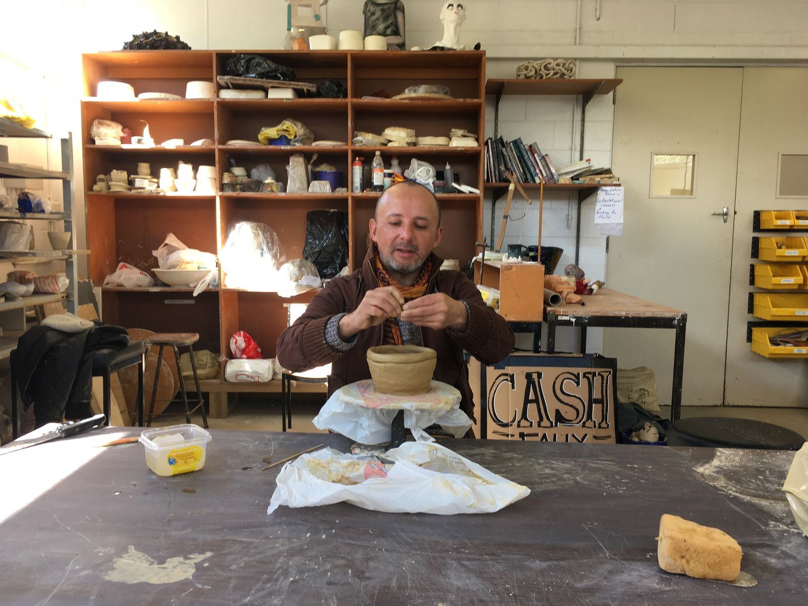
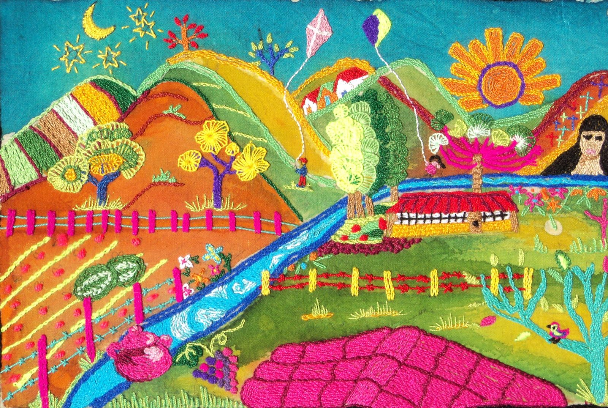

Portafolio
Proyectos

Bordado Charrúa de la Memoria
Ver proyecto
Residencia Artística en Nueva Zelanda
Ver proyecto
Exposición Widufe Kuyfiche – Alfarero Ancestral
Ver proyecto
Murales Textiles Colaborativos
Ver proyecto
Costa Rica Fashion Week 2019
Ver proyecto
Resultados Taller de Técnicas Textiles en San Vicente de Tagua Tagua
Ver proyecto